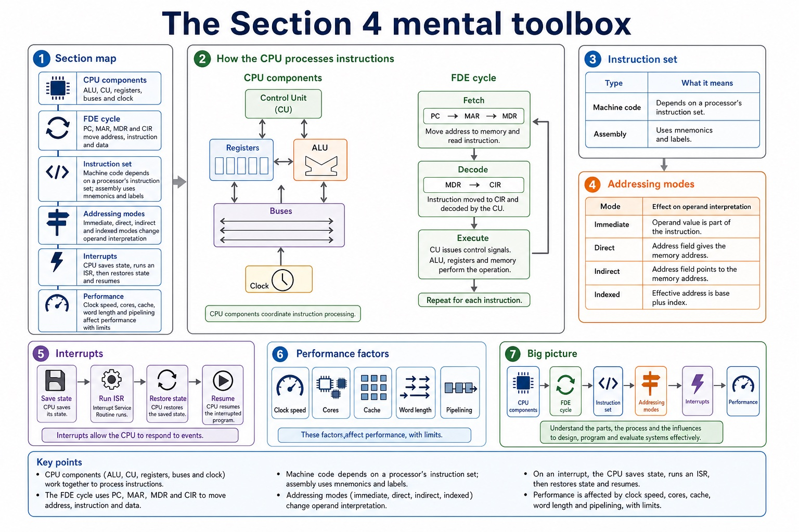
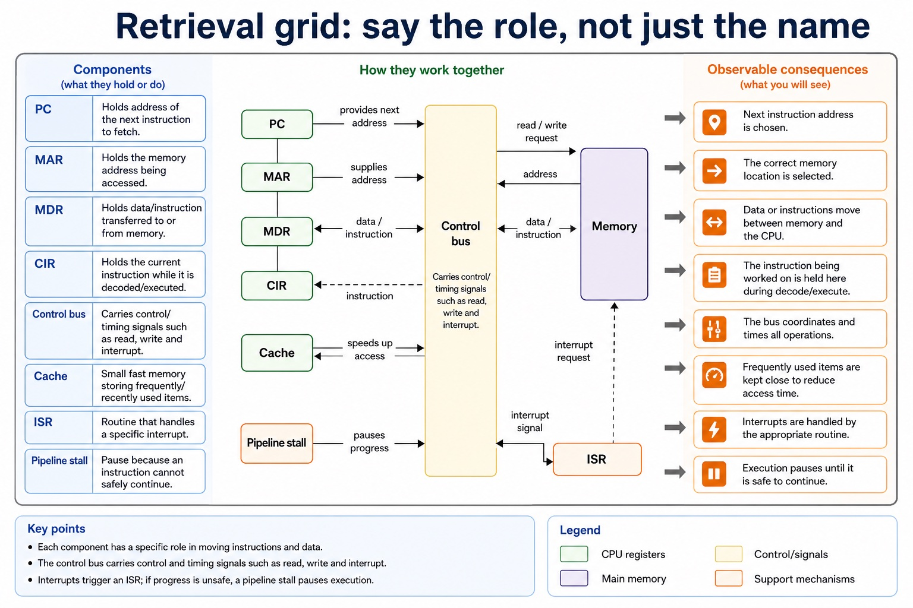
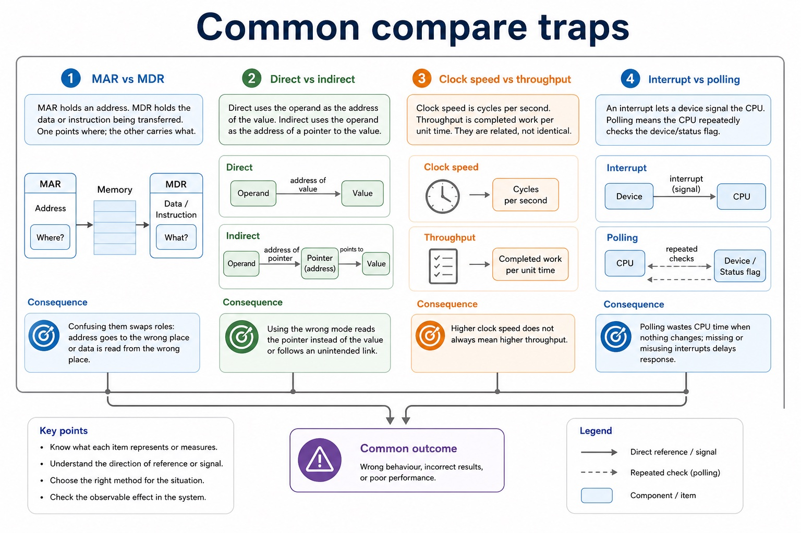

Before answering, choose the right mental toolbox.
Section 4 questions often look similar: registers, buses, instructions,
interrupts and performance all involve the CPU. This review trains topic
recognition, trace accuracy and Cambridge-style correction.
Recognisewhich Section 4 concept a mixed question is testing
Traceprocessor behaviour using precise registers, buses and instruction stages
Improveweak answers using mark-scheme language and correction prompts
Identify topicState mechanismTrace or compareAdd consequenceCheck MS wording
The first mark is often knowing what the question is really asking.
Why this matters
Students often know the content but answer the neighbouring topic. Review lessons fix recognition and precision.
Common trap
Do not write a memorised paragraph about the CPU if the question asks specifically about MAR, indirect addressing or cache.
Warm-up hook
Which topic is being tested?
Click the best label for this mini-question: "Explain why `LOAD #5` and `LOAD 5` may load different values."
Choose one. A review lesson begins by naming the correct topic before writing the answer.
Section map
The Section 4 mental toolbox
CPU componentsALU, CU, registers, buses and clock coordinate instruction processing.FDE cyclePC, MAR, MDR and CIR move address, instruction and data through fetch-decode-execute.Instruction setMachine code depends on a processor's instruction set; assembly uses mnemonics and labels.Addressing modesImmediate, direct, indirect and indexed modes change operand interpretation.InterruptsThe CPU saves state, runs an ISR, then restores state and resumes.PerformanceClock speed, cores, cache, word length and pipelining affect performance with limits.
The Section 4 mental toolbox

The Section 4 mental toolbox: source-grounded visual explanation.
Lesson fact: Section map
Lesson fact: CPU components ALU, CU, registers, buses and clock coordinate instruction processing.
Lesson fact: FDE cycle PC, MAR, MDR and CIR move address, instruction and data through fetch-decode-execute.
Lesson fact: Instruction set Machine code depends on a processor's instruction set; assembly uses mnemonics and labels.
Lesson fact: Interrupts The CPU saves state, runs an ISR, then restores state and resumes.
Lesson fact: Performance Clock speed, cores, cache, word length and pipelining affect performance with limits.
Knowledge point 1
Classify the question before answering
Question clue
Likely topic
What to include
PC, MAR, MDR, CIR, ACC, status flags
Registers / FDE cycle
Temporary storage role and sequence.
Address bus, data bus, control bus
System buses
Direction, content carried and purpose.
Mnemonic, opcode, operand, label
Instruction sets / assembly
Human-readable representation and processor-specific machine code.
`#`, address, pointer, base + index
Addressing modes
How the operand is interpreted and effective address.
ISR, save state, device signal
Interrupts
Pause, save state, run ISR, restore, resume.
Throughput, stall, branch, cache, cores
Performance / pipelining
Mechanism, condition and limitation.
Knowledge point 2
Retrieval grid: say the role, not just the name
PCHolds address of the next instruction to fetch.MARHolds the memory address being accessed.MDRHolds data/instruction transferred to or from memory.CIRHolds the current instruction while it is decoded/executed.Control busCarries control/timing signals such as read, write and interrupt.CacheSmall fast memory storing frequently/recently used items.ISRRoutine that handles a specific interrupt.Pipeline stallPause because an instruction cannot safely continue.
Retrieval grid: say the role, not just the name

Retrieval grid: say the role, not just the name: source-grounded visual explanation.
Lesson fact: PC Holds address of the next instruction to fetch.
Lesson fact: MAR Holds the memory address being accessed.
Lesson fact: MDR Holds data/instruction transferred to or from memory.
Lesson fact: CIR Holds the current instruction while it is decoded/executed.
Lesson fact: Control bus Carries control/timing signals such as read, write and interrupt.
Lesson fact: Cache Small fast memory storing frequently/recently used items.
Lesson fact: ISR Routine that handles a specific interrupt.
Lesson fact: Pipeline stall Pause because an instruction cannot safely continue.
Knowledge point 3
Common compare traps
MAR vs MDR
MAR holds an address. MDR holds the data or instruction being transferred. One points where; the other carries what.
Direct vs indirect
Direct uses the operand as the address of the value. Indirect uses the operand as the address of a pointer to the value.
Clock speed vs throughput
Clock speed is cycles per second. Throughput is completed work per unit time. They are related, not identical.
Interrupt vs polling
An interrupt lets a device signal the CPU. Polling means the CPU repeatedly checks the device/status flag.
Common compare traps

Common compare traps: source-grounded visual explanation.
Lesson fact: MAR vs MDR
Lesson fact: MAR holds an address. MDR holds the data or instruction being transferred. One points where; the other carries what.
Lesson fact: Direct vs indirect
Lesson fact: Direct uses the operand as the address of the value. Indirect uses the operand as the address of a pointer to the value.
Lesson fact: Clock speed vs throughput
Lesson fact: Clock speed is cycles per second. Throughput is completed work per unit time. They are related, not identical.
Lesson fact: Interrupt vs polling
Lesson fact: An interrupt lets a device signal the CPU. Polling means the CPU repeatedly checks the device/status flag.
Timed task
8-minute mixed Section 4 response
Choose one question, write the answer, then compare with the expandable MS in the exam section.
Question ATrace the fetch stage and name the role of PC, MAR and MDR.Question BExplain why an interrupt service routine must save and restore processor state.Question CDiscuss why pipelining may improve CPU performance but not always reach ideal speed-up.